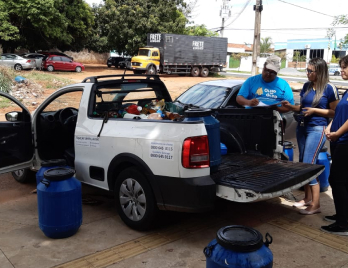
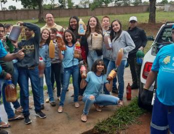
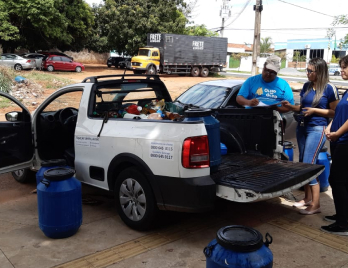
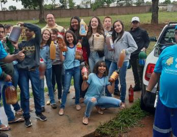

O programa ambiental “Olho no Óleo” foi lançado pela Saneago em 22 de março de 2012, no canteiro de obras da Estação de Tratamento de Água Governador Mauro Borges, em comemoração ao Dia Mundial da Água daquele ano.
Como funciona?
O programa foi implementado em duas modalidades (pequeno gerador e grande gerador). Na primeira modalidade, aqueles que produzem pequenos volumes de óleo residual de fritura entregam o material acondicionado em garrafas tipo PET, com tampa, nas agências de atendimento dos VaptVupts e em algumas Gerências de Negócios (em Goiânia e cidades onde o programa encontra-se implementado). Para aquelas empresas consideradas grandes geradoras (pastelarias, pit dogs, bares, panificadoras, etc.), que produzem em torno de 50 litros do resíduo por mês, há um atendimento diferenciado. Nesse caso, ocorre um cadastramento do gerador quando ele entra em contato pelo telefone 0800 645 0115. Posteriormente, é realizada a entrega de um recipiente em comodato para que o cliente acumule o resíduo. Sempre que esse recipiente fica cheio, ele entra em contato novamente pelo canal 0800 e uma equipe comparece ao local para efetuar o recolhimento.
 



Bônus para você e para o meio ambiente
Tanto para o grande gerador como para o pequeno é concedido para próxima conta (fatura de água e/ou esgoto) um crédito de R$ 0,50 para cada litro de óleo entregue. Há depoimentos de clientes (grandes geradores) declarando que isso contribui com a redução de até 25% na conta de água do mês.
Até o primeiro trimestre de 2021, foram coletados dos clientes da Companhia mais de 500 mil litros de óleo residual de fritura, material que antes era descartado de forma inadequada nas redes coletoras de esgoto, podendo ocasionar a obstrução destas ou comprometer os sistemas de tratamento de esgoto.